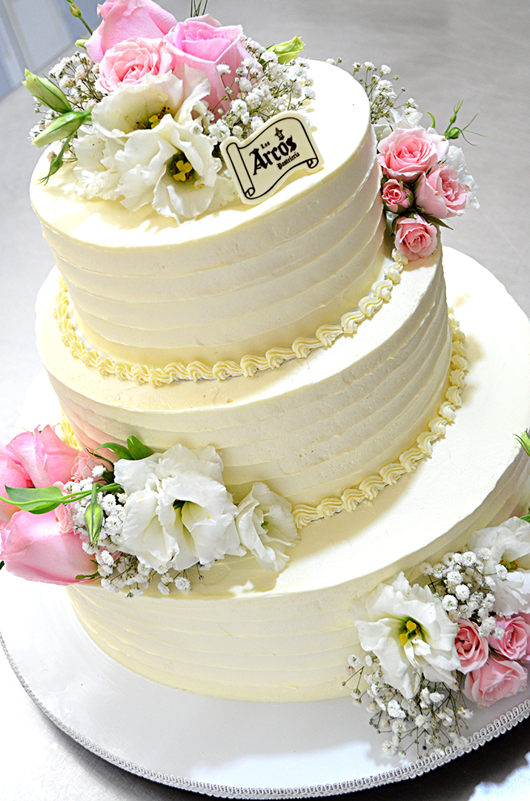

Técnica donde se busca representar, recrear o replicar algo real sobre la superficie del pastel. Aquí es importante la creatividad y el concepto para tener claro el volumen, aunque los detalles, colores, proporciones, forma y tamaño del bizcocho también son fundamentales para lograr un perfecto acabado final. Este tipo de decoración es ideal para cumpleaños temáticos o infantiles.
El costo de esta docoracion dependera completamente del diseño solicitado por el cliente
Se usan moldes especiales para realizar círculos, cuadrados, triángulos, rectángulos, rombos y todo tipo de figuras geométricas que puedan dar un toque de profundidad y dimensionalidad. A su vez, proporcionan color, textura, uniformidad a la preparación, incluso recrean ilusiones ópticas.
Esta decoracion tendra un costo de $100 por kilo
Son una opción por excelencia cuando de sencillez, calidez, delicadeza y belleza se trata. Dan un toque orgánico, natural y fresco a la preparación y, en algunas ocasiones, de romanticismo. Suelen utilizarse flores comestibles o artificiales, las más comunes son: violetas, rosas, jazmines, crisantemos, margaritas, orquídeas, entre otras. Además, son un accesorio perfecto, ya que se pueden incorporar en diferentes partes o lugares de una torta o ponqué.
Esta decoracion tendra un costo de $150 por kilo